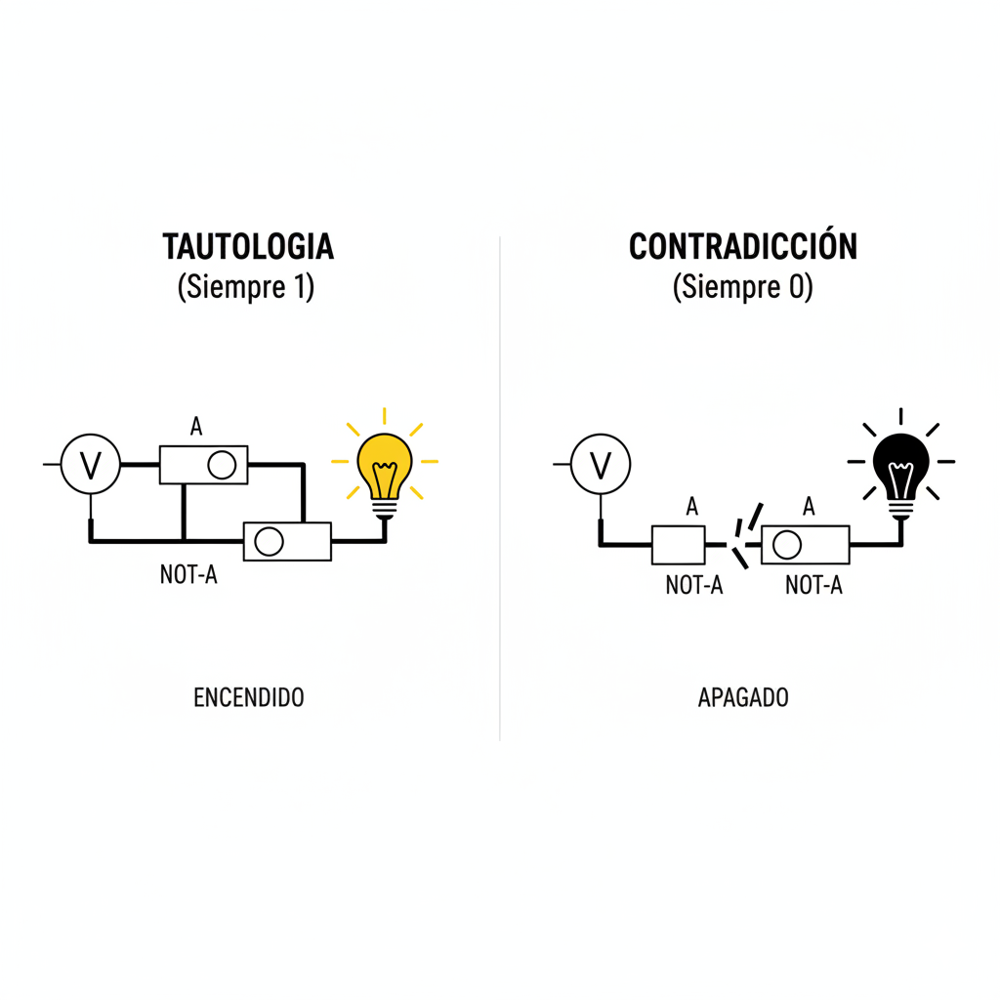
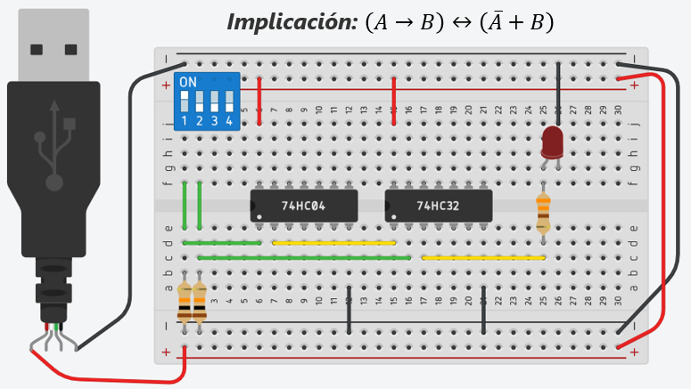
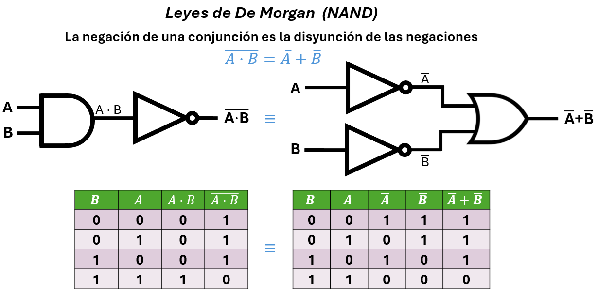
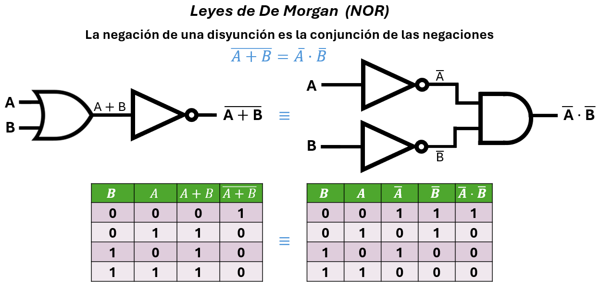

Unidad 3: Fundamentos de Cómputo - Lección 22
En \(X = \overline{A}B + A\overline{B}\) ingeniería y leyes, las frases del tipo "Si haces esto, entonces pasa aquello" son sagradas. Hoy vamos a construir un circuito capaz de juzgar si una promesa se cumplió o se rompió.
Antes de la promesa, veamos los extremos: expresiones que siempre dan el mismo resultado, sin importar las entradas.
Estas expresiones son siempre verdaderas. Su circuito dará 1 en cualquier situación.
| Expresión | Nombre / Regla | Circuito equivalente | Ejemplo cotidiano |
|---|---|---|---|
| \(A + 1 = 1\) | Dominación (OR) | OR con una entrada fija en 1 | "Si sales con paraguas O el sol siempre brilla (verdad fija), la afirmación siempre es cierta". |
| \(A + \overline{A} = 1\) | Complemento (OR) | OR entre A y su negación | "O llueve (\(A\)) o no llueve (\(\overline{A}\)). No hay otra opción. Siempre es verdadero." |
💡 Ejemplo visual: Conecta un inversor (NOT) a una entrada de una compuerta OR y la otra entrada directa. La salida siempre será 1, sin importar el valor de A.
Estas expresiones son siempre falsas. Su circuito dará 0 en cualquier situación.
| Expresión | Nombre / Regla | Circuito equivalente | Ejemplo cotidiano |
|---|---|---|---|
| \(A \cdot 0 = 0\) | Dominación (AND) | AND con una entrada fija en 0 | "Si está lloviendo Y el cielo es de color naranja permanente (falso), la afirmación completa es falsa". |
| \(A \cdot \overline{A} = 0\) | Complemento (AND) | AND entre A y su negación | "Llueve y no llueve al mismo tiempo". ¡Imposible! Siempre es falso. |
💡 Ejemplo visual: Conecta un inversor (NOT) a una entrada de una compuerta AND y la otra entrada directa. La salida siempre será 0, sin importar el valor de A.
🔗 Conexión Matemática: Estas cuatro expresiones son casos particulares de las leyes del álgebra de Boole. En la Lección 24 volveremos aquí para probar formalmente la "Unicidad del Complemento".

Fig 1. A la izquierda, la tautología; a la derecha, la contradicción.
No existe un chip "Implicador", pero podemos construirlo. Usemos el ejemplo de la Promesa del Político:
"Si gano las elecciones (\(A\)), entonces bajaré los impuestos (\(B\))."
¿Cuándo miente el político? Analicemos la tabla:
| Entrada | Salida | ||
|---|---|---|---|
| B (Impuestos) | A (Ganó) | Juicio | Análisis |
| 1 (Sí) | 1 (Sí) | 1 (Verdad) | Cumplió. |
| 1 (Sí) | 0 (No) | 0 (Falso) | ¡MINTIÓ! (Ganó y no cumplió) |
| 0 (No) | 1 (Sí) | 1 (Verdad) | No ganó. (No estaba obligado). |
| 0 (No) | 0 (No) | 1 (Verdad) | No ganó. (No rompió promesa). |
La única forma de que la promesa sea FALSA es si \(A=1\) y \(B=0\). Por lo tanto, la ecuación que describe esto es:
Traducción: "Para cumplir, O bien NO gano (\(\overline{A}\)), O bien bajo los impuestos (\(B\))".

Fig 2. Este circuito te dice si un contrato se cumplió.
En lógica, decir "Si A, entonces B" es exactamente lo mismo que decir "Si NO pasa B, entonces NO pasó A".
$$A \rightarrow B \equiv \overline{B} \rightarrow \overline{A}$$
Uso en Reparaciones:
Regla: "Si hay corriente (\(A\)), el LED prende (\(B\))".
Diagnóstico: Llegas y ves que el LED NO prende (\(\overline{B}\)).
Conclusión: ¡Seguro NO hay corriente (\(\overline{A}\))! No necesitas medir para saberlo.
Dos docentes analizan cómo la implicación lógica puede ser implementada con compuertas NOT y OR, y discuten estrategias para enseñar la diferencia entre tautologías, contradicciones y proposiciones condicionales.
Usa esta guía para construir prompts que te ayuden a generar ejemplos de implicaciones lógicas en contextos reales.
"Comprendí que la implicación \(A \rightarrow B\) solo es falsa cuando A es verdadero y B es falso, y que en circuitos se implementa como \(\overline{A} + B\). Quiero saber: si diseño un sistema de riego automático que debe activarse solo si (hay poca humedad Y no está lloviendo) O (es de noche Y hay programación manual), ¿cómo puedo expresar esa regla como una implicación y qué circuito la implementaría? Explícame como si fuera a enseñárselo a mis estudiantes de grado 9° que están empezando con lógica digital. Incluye un error común que debo evitar al explicar por qué la implicación no es lo mismo que la equivalencia."
Responde en tu cuaderno físico:
Has construido un circuito que juzga promesas. Ahora imagina que en lugar de un solo juicio, tienes que juzgar a un conjunto completo de señales. En la próxima lección, daremos el salto al mundo de los buses de datos y aprenderemos a usar los cuantificadores para decir cosas como "TODOS los sensores están activos" o "EXISTE al menos un error en el sistema". ¡De la lógica individual a la lógica colectiva!
Unidad 3: Fundamentos de Cómputo - Lección 24
A lo largo de este curso, hemos utilizado las Tablas de Verdad como nuestra herramienta de confianza. Cada vez que queríamos estar seguros de que un circuito funcionaba, o que una ley matemática era cierta, evaluábamos todos los casos posibles (00, 01, 10, 11).
Observa estas dos imágenes familiares de las Leyes de De Morgan que exploramos en la Unidad 2:

Fig 1. Comprobación empírica: Probamos los 4 estados posibles para verificar que \(\overline{A \cdot B} = \bar{A} + \bar{B}\).

Fig 2. Comprobación empírica: Probamos los 4 estados posibles para verificar que \(\overline{A + B} = \bar{A} \cdot \bar{B}\).
Hacer tablas de verdad es un método empírico (de "fuerza bruta"). Funciona perfecto para 2 variables (4 filas) o 3 variables (8 filas).
Pero, ¿qué pasa en el mundo real? Un procesador moderno evalúa ecuaciones lógicas con 64 variables. ¡Una tabla de verdad para 64 variables tendría 18.4 trillones de filas! Si revisaras una fila por segundo, te tomaría 584,000 años comprobar si una Ley de De Morgan funciona en ese circuito.
Hoy dejaremos atrás las tablas de verdad. Bienvenidos al Álgebra Formal.
Un técnico comprueba un circuito probando sus entradas. Un ingeniero matemático demuestra que el circuito es perfecto usando únicamente las reglas fundamentales de la lógica, sin probar un solo número. A estas reglas fundamentales las llamamos Axiomas o Postulados.